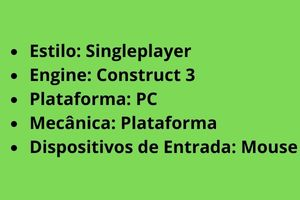
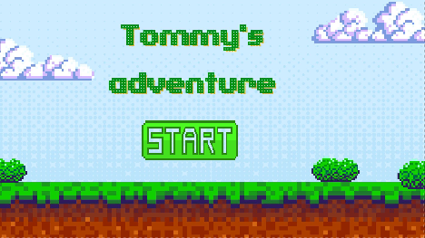
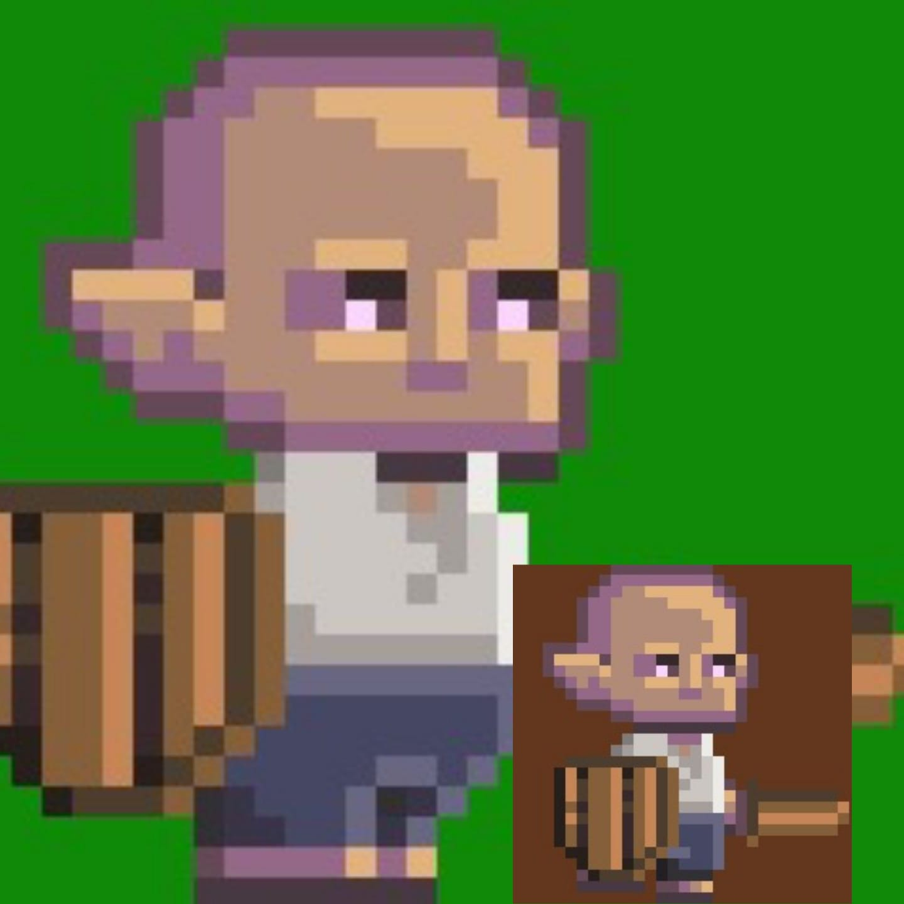
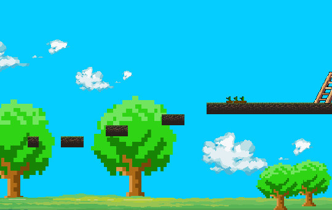
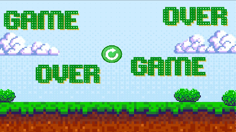
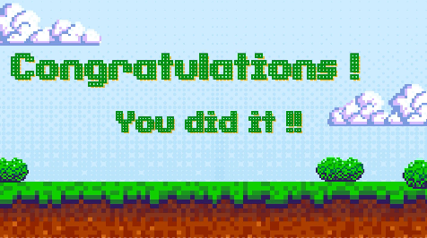
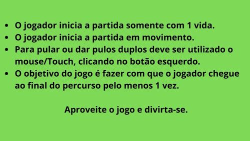
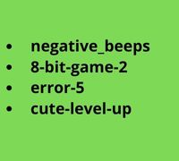

Tommy's Adventure
O jogo de plataforma Tommy's Adventure é inspirado em jogos estilo "Endless Runner" que são jogos de corrida intermináveis,
como exemplo o Dino T-Rex, o famoso dinossarou do Google que aparece quando a internet cai.
No Tommy's Adventure, o jogador iniciará a partida já em movimento e deverá seguir a diante tomando cuidado com os obstáculos e
trajetos incompletos que implicaram direto no resultado do jogo.
Ficha Técnica:

Personagem e cenário do jogo:

Inicio

Jogador Tommy

Cenário

Game Over

Vitória
Como jogar e regras do jogo;
O Jogo Tommy's Adventure é composto somente por uma fase que consiste em:

Trilha Sonora:
